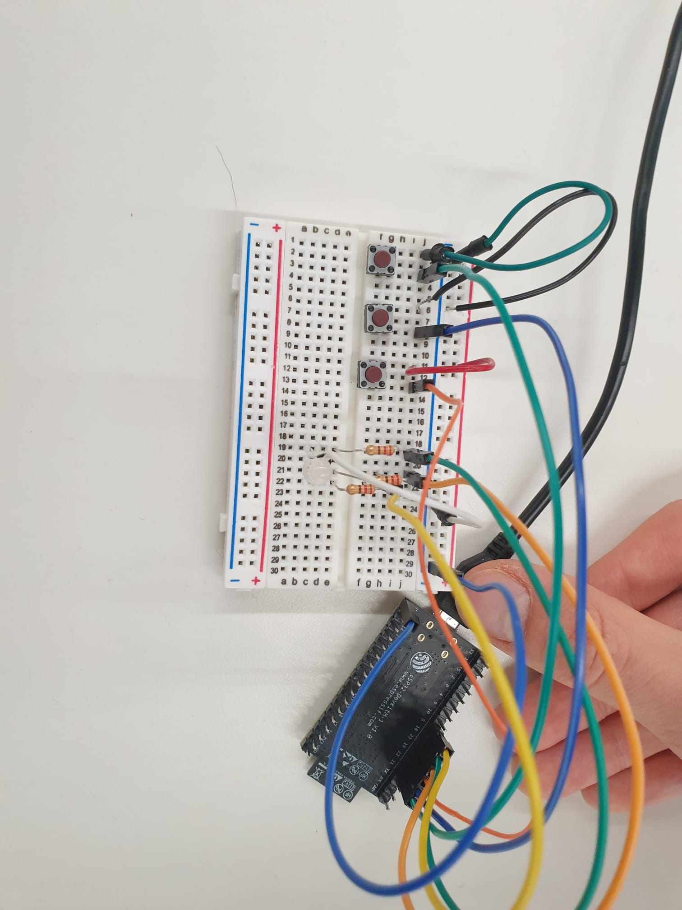

Week 9: Wireless Devices
<br>
<b> Week 8 </b>
This week Andrei and I paired up to work on our wireless project. Given that our final projects our quite different we decided to do something fun and try and make some sort of security system. We quickly decided that our input would be some sort of code while the output would be a locking mechanism. I had worked with solenoid locks previously and knew that they were fairly to use in a circuit (this was not the case for this time) so we decided to go with a simple set- up:
Before working with the wireless component of the design we tested each component to make sure that the code and circuit worked correctly on their own.
<u> Input - Button component </u>
To start out we tested one button on the ESP32 following this tutorial. This was important for us because we had a tough time understanding what each of the pins on the ESP32 did at first. At first this diagram really confused me and I thought that the GIOP number was different from the pin number, however after playing around with different pins it made more sense.
Analyzing the tutorial we noticed it was more or less same initial code as with Arduino before so we felt pretty confident with making our design more ambitious. We decided it would be cool to have 3 buttons and require a specific sequence of those three buttons in order to read correct or incorrect (and eventually pair this with the unlocking of the solenoid).
Initially we tried to embed a bunch if if statements and indexing such that correct index values would be assigned if the buttons were clicked in the correct order. I didn’t save the code but it would essentially read that if the first correct button was pressed first then it could move to the second index but if not it would restart from index 0. This made sense to us but after talking to Suvin we realized we had too many conflicting variables.
Both Kassia and Suvin suggested using an array system instead. Andrei worked a lot on this given his python experience and this seemed to work well. Finally to help keep track of how many buttons the user had pressed we also added an LED light to the system. This light would turn blue after each button was pressed and after the 3 buttons were pressed it would either flash green or red depending on if the sequence was pressed. The successful code will be explained in the next part as we move to connecting these via radio.
The circuit set up for the buttons is shown in the photo below
<div class = "center">

</div>
<u> Solenoid component </u>
Originally we tried just connecting our Arduino to our power source to ensure it was working but this didn’t seem to work so we followed this tutorial Arduino tutorial for the set up, similar to the button testing process. This also wasn’t producing any results until we realized that the 5V the Arduino UNO supplies is not sufficient for the solenoid. By adding an additional 9V power source this issue was resolved.
When we switched to ESP 32 didn’t work with same system. I’m still not exactly sure why but when we switched out the field effect transistor with a bipolar junction resistor it worked!
In this case the circuit was much more complicated than the actual code, given that we were just performing Analog HIGH and LOW readings. The circuit is shown in the photo below:
<div class = "center">
<img src="../06/solenoid.jpeg"
width ="500" height="300"/>
</div>
<u> Radio component </u>
For the wirless componenet of our design we went with the ESP-NOW tutorial since we did not require wifi for our design. We also only required one way transfer of data since the only input device was the buttons. This made this stage of our project fairly easy. We used the templates given for the receiver and sender codes and modified it by using our previous solenoid and button codes. The final receiver and sender codes are shown below.
<pre><code>
#RECEIVER CODE
#define solenoidPin 27
#include <esp_now.h>
#include <WiFi.h>
// Structure example to receive data
// Must match the sender structure
typedef struct struct_message {
bool d;
} struct_message;
// Create a struct_message called myData
struct_message myData;
// callback function that will be executed when data is received
void OnDataRecv(const uint8_t * mac, const uint8_t *incomingData, int len) {
memcpy(&myData, incomingData, sizeof(myData));
Serial.print("Bool: ");
Serial.println(myData.d);
Serial.println();
if (myData.d == 1) {
digitalWrite(solenoidPin, HIGH); //Switch Solenoid ON
delay(10); //Wait 1 Second
}
else if (myData.d ==0 ) {
digitalWrite(solenoidPin, LOW); //Switch Solenoid ON
delay(10); //Wait 1 Second
}
}
void setup() {
// Initialize Serial Monitor
Serial.begin(115200);
{
pinMode(solenoidPin, OUTPUT); //Sets that pin as an output
}
// Set device as a Wi-Fi Station
WiFi.mode(WIFI_STA);
// Init ESP-NOW
if (esp_now_init() != ESP_OK) {
Serial.println("Error initializing ESP-NOW");
return;
}
// Once ESPNow is successfully Init, we will register for recv CB to
// get recv packer info
esp_now_register_recv_cb(OnDataRecv);
}
void loop() {
}
</code></pre>
<pre><code>
# RECEIVER CODE
#include <esp_now.h>
#include <WiFi.h>
//Bellow I define the pins I will use for the RGB LED and the Buttons
#define BUTTON_PIN_1 21 // GIOP21 pin connected to button
#define BUTTON_PIN_2 22
#define BUTTON_PIN_3 19
#define PIN_RED 18 // GIOP23
#define PIN_GREEN 23 // GIOP22
#define PIN_BLUE 5 // GIOP21
// REPLACE WITH YOUR RECEIVER MAC Address
uint8_t broadcastAddress[] = {0xC8, 0xF0, 0x9E, 0x47, 0xE8, 0x54};
// Structure example to send data
// Must match the receiver structure
typedef struct struct_message {
bool d; //We only needed a boolean to be sent
} struct_message;
// Create a struct_message called myData
struct_message myData;
esp_now_peer_info_t peerInfo;
int Button1;
int Button2;
int Button3;
// I initiate the "last" and "current" states of the three buttons, with the last always being LOW at the beggining of the program
int lastState1 = LOW;
int lastState2 = LOW;
int lastState3 = LOW;
int currentState1;
int currentState2;
int currentState3;
// The arrays are initialised here
int order[] = {0, 0, 0}; //This array is initialised with zeroes but will contain the current combination of buttons
int right_order[] = {2,3,1}; //This array contains the right combination
int place = 0; //This is an index/counter that is incemented whenever a button is pressed
int LorU = 0; //This is a variable that stores whether the previous state of the solenoid was LOW or HIGH
void OnDataSent(const uint8_t *mac_addr, esp_now_send_status_t status) {
//Transmission initiation code
Serial.print("\r\nLast Packet Send Status:\t");
Serial.println(status == ESP_NOW_SEND_SUCCESS ? "Delivery Success" : "Delivery Fail");
}
void setup() {
// initialize serial communication at 115200 bits per second:
Serial.begin(115200);
//I initiate the Button pins as inputs with internal PULLUP resistors
pinMode(BUTTON_PIN_1, INPUT_PULLUP);
pinMode(BUTTON_PIN_2, INPUT_PULLUP);
pinMode(BUTTON_PIN_3, INPUT_PULLUP);
//I initialise the RGB pins as outputs
pinMode(PIN_RED, OUTPUT);
pinMode(PIN_GREEN, OUTPUT);
pinMode(PIN_BLUE, OUTPUT);
// Set device as a Wi-Fi Station
WiFi.mode(WIFI_STA);
// Init ESP-NOW
if (esp_now_init() != ESP_OK) {
Serial.println("Error initializing ESP-NOW");
return;
}
// Once ESPNow is successfully Init, we will register for Send CB to
// get the status of Trasnmitted packet
esp_now_register_send_cb(OnDataSent);
// Register peer
memcpy(peerInfo.peer_addr, broadcastAddress, 6);
peerInfo.channel = 0;
peerInfo.encrypt = false;
// Add peer
if (esp_now_add_peer(&peerInfo) != ESP_OK){
Serial.println("Failed to add peer");
return;
}
}
void loop() {
// read the state of all the buttons
currentState1 = digitalRead(BUTTON_PIN_1);
currentState2 = digitalRead(BUTTON_PIN_2);
currentState3 = digitalRead(BUTTON_PIN_3);
//The if statement only acts when the button is released, not pressed - specifically for button 1
if(lastState1 == HIGH && currentState1 == LOW){
Serial.println("The button 1 was pressed"); //For debugging - I print the button that was pressed
//RGB LED goes blue because a button was pressed
analogWrite(PIN_RED, 0);
analogWrite(PIN_GREEN, 0);
analogWrite(PIN_BLUE, 255);
delay(500); //The LED stays blue for half a second
analogWrite(PIN_BLUE, 0); //Then it stops
order[place] = 1; //The number of button pressed (1) is stored in the array
place = place + 1; //The "place" counter is incremented, as another button was pressed
}
else if(lastState2 == HIGH && currentState2 == LOW){
Serial.println("The button 2 was pressed"); //For debugging - I print the button that was pressed
//RGB LED goes blue because a button was pressed
analogWrite(PIN_RED, 0);
analogWrite(PIN_GREEN, 0);
analogWrite(PIN_BLUE, 255);
delay(500); //The LED stays blue for half a second
analogWrite(PIN_BLUE, 0); //Then it stops
order[place] = 2; //The number of button pressed (2) is stored in the array
place = place + 1; //The "place" counter is incremented, as another button was pressed
}
else if(lastState3 == HIGH && currentState3 == LOW){
Serial.println("The button 3 was pressed"); //For debugging - I print the button that was pressed
//RGB LED goes blue because a button was pressed
analogWrite(PIN_RED, 0);
analogWrite(PIN_GREEN, 0);
analogWrite(PIN_BLUE, 255);
delay(500); //The LED stays blue for half a second
analogWrite(PIN_BLUE, 0); //Then it stops
order[place] = 3; //The number of button pressed (3) is stored in the array
place = place + 1; //The "place" counter is incremented, as another button was pressed
}
// As this is a loop and the next iteration is about to start, the last state of the button assigned the value of the current one for all three buttons
lastState1 = currentState1;
lastState2 = currentState2;
lastState3 = currentState3;
// When the counter "place" is equal to three, three buttons were pressed already, which means we can check wheather the order is correct
if (place == 3){
//We check if all elements of the current array match those of the correct array
if (order[0] == right_order[0] && order[1] == right_order[1] && order[2] == right_order[2]){ //If it's correct
Serial.println("Correct combination!"); // We print that the combination was correct (for debugging purposes)
//We make the RGB LED green for half a second
analogWrite(PIN_RED, 0);
analogWrite(PIN_GREEN, 255);
analogWrite(PIN_BLUE, 0);
delay(500);
analogWrite(PIN_GREEN, 0);
LorU = LorU + 1; //We increment the variable that counts whenever a signal is sent
if (LorU % 2 == 1){ //If the variable is odd
myData.d = false; // The data we will send will be "false" - which opens the solenoid
}
else{
myData.d = true; // If the variable is even, it sends "true" - which locks the solenoid
}
// Send the boolean via ESP-NOW
esp_err_t result = esp_now_send(broadcastAddress, (uint8_t *) &myData, sizeof(myData));
//I then re-initiate the array - "empty" out all elements of the array
order[0] = 0;
order[1] = 0;
order[2] = 0;
place = 0; // The index/counter "place" is back at the beggining
}
else{ //If the combination is not correct
// We print that the combination was incorrect (for debugging purposes)
Serial.println("Failed combination!");
//We then make the RGB LED Red for half a second
analogWrite(PIN_RED, 255);
analogWrite(PIN_GREEN, 0);
analogWrite(PIN_BLUE, 0);
delay(500);
analogWrite(PIN_RED, 0);
//I then re-initiate the array - "empty" out all elements of the array
order[0] = 0;
order[1] = 0;
order[2] = 0;
place = 0; // The index/counter "place" is back at the beggining
}
}
}
</code></pre>
The only extra step required was to find the MAC address of the receiver ESP32. We used my one for this and it ended up being very straightforward. Additionally we simplified the code given that their was only Boolean information being sent such that “true” caused the lock to open and the first time and another “true” cause the lock to close again.
<u> Building the box </u>
Since we wanted a complete system we decided to laser cut a box using a dxf file we found from online (source here). We first cut in cardboard to make sure all the components would fit and then put it together with wood. We used a dxf template we found online and modified the dimensions based on our thickness of material. We then assembled the box and screwed the solenoid onto the lid, added a handle and divert for the solenoid and voila!
<div class = "center">
<img src="../06/box.jpeg"
width ="500" height="300"/>
</div>
<u> Final product </u>
<video width ="500" height="300" autoplay loop muted>
<source src="../09/final.mp4" type="video/mp4" />
</video>
<video width ="500" height="300" autoplay loop muted>
<source src="../09/final2.mp4" type="video/mp4" />
</video>